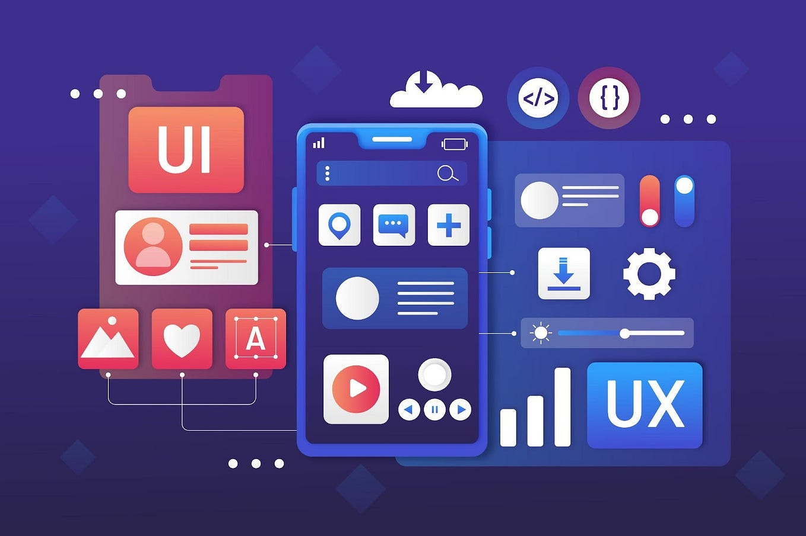
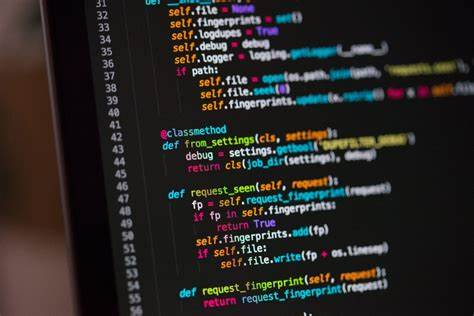
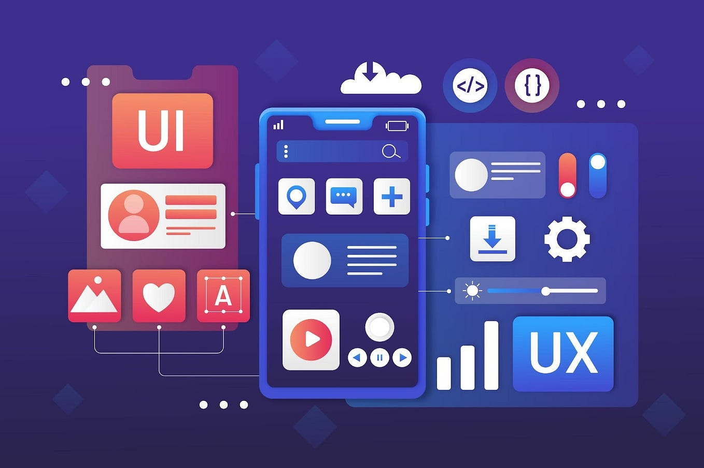
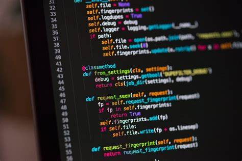
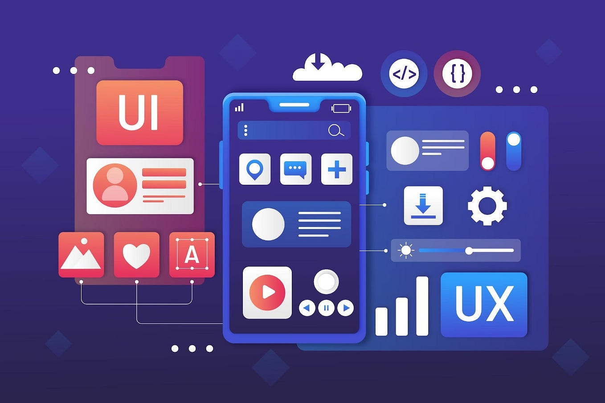
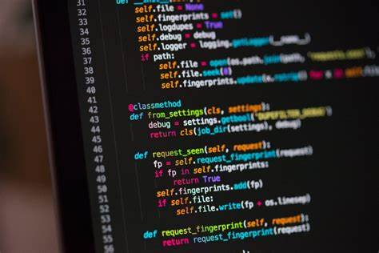

PORTFOLIO
 




In today's digital landscape, the fusion of technology and creativity has revolutionized the way we interact with websites and applications. From the seamless functionality of a user-friendly interface to the captivating visuals that engage and inspire, the realms of web design and UX/UI design have become integral components in shaping online experiences. Web design encompasses the art of crafting visually appealing layouts and structures while ensuring optimal functionality across various devices and platforms. It delves into the aesthetics, typography, and color schemes that not only reflect a brand's identity but also resonate with its audience. Meanwhile, UX/UI design focuses on the user experience and interface elements, prioritizing intuitive navigation, clear information architecture, and delightful interactions. It's about understanding user behaviors, conducting research, and iteratively refining designs to create meaningful and impactful experiences. However, beyond the pixels and code lies another crucial aspect of success in the digital realm: professional networking. In an interconnected world where collaboration and connections drive innovation, building and nurturing professional relationships are paramount. Whether it's forging partnerships with fellow designers, developers, or clients, or engaging with communities and industry events, effective networking can open doors to opportunities, insights, and growth. Together, web design, UX/UI design, and professional networking form a dynamic trifecta that shapes the digital landscape. They intertwine creativity, functionality, and connectivity to not only create visually stunning and user-centric experiences but also foster collaboration and advancement within the industry. As we navigate this ever-evolving digital ecosystem, embracing the synergy of these disciplines is key to driving innovation and making meaningful contributions in the digital space.



Welcome to my portfolio! I'm all about crafting captivating digital experiences. With an eye for aesthetics and a focus on user needs, I specialize in creating visually stunning websites that tell compelling stories. From sleek designs to dynamic interfaces, each project is an opportunity for innovation. Explore my work and see how I bring brands to life in the digital realm.


Welcome! I'm all about connections and collaboration. Let's network and explore how we can support each other's professional growth.